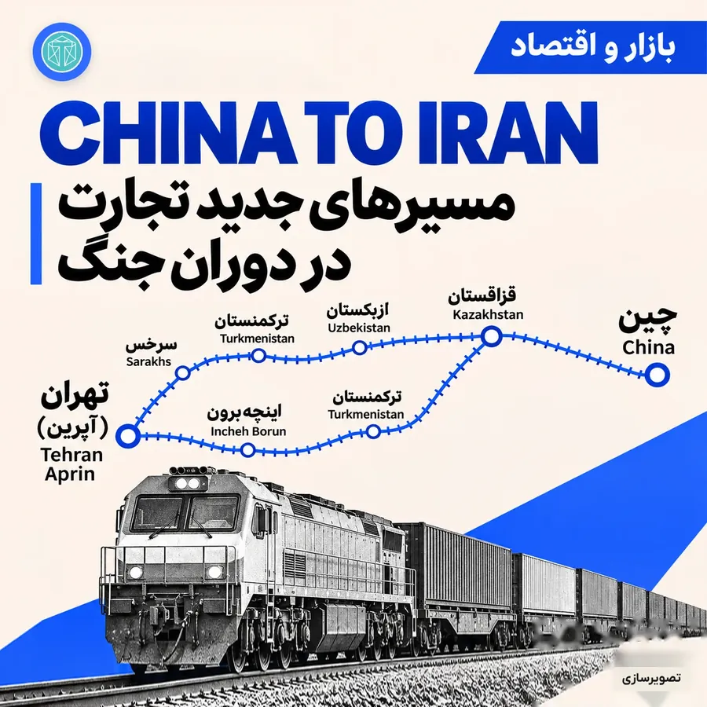
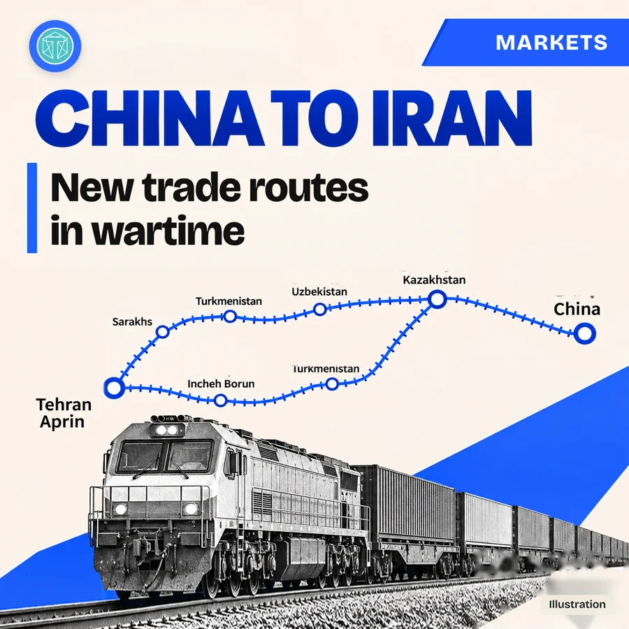

چین تا ایران؛ مسیرهای تازهی تجارت در دوران سخت، و فرصت ترانزیت پس از آن
China to Iran: new trade routes in hard times, and the transit opportunity after
دو کریدور ریلی، هزینه و زمان واقعی حمل، همهی مسیرهای جایگزین، هشدار تحریم، چکلیست واردکنندگان و ظرفیتی که برای ترانزیت ایران باز میشود
Two rail corridors, real freight costs and times, every alternative route, a sanctions warning, an importer’s checklist, and the capacity opening up for Iran’s transit trade
این روزها هر واردکنندهی ایرانی دو نگرانی همزمان دارد: دلاری که هر روز گرانتر میشود و کانتینری که معلوم نیست از کدام راه و کِی برسد. وقتی راه دریا تنگ شد، قطار جای خودش را باز کرد. این گزارش نشان میدهد مسیرهای ریلی چین تا ایران چطور کار میکنند، چقدر هزینه و زمان میبرند، چه مسیرهای دیگری هست، و مهمتر از همه: چرا همین مسیرها میتوانند بعد از این دوران، به یک مزیت بزرگ برای ایران تبدیل شوند.
برای یک تولیدکنندهی ایرانی، نرسیدن یک کانتینر قطعات الکترونیکی، مواد اولیه یا تجهیزات صنعتی فقط یک تأخیر نیست؛ گاهی یعنی خواب خط تولید، نگرانی کارکنان، از دست رفتن مشتری و گرانتر شدن کالای نهایی. برای همین، شناختن مسیرهای جایگزین امروز یک دانش اقتصادی جدی است.
در یک نگاه
- حدود ۸۳٪ واردات ایران بهطور سنتی از بنادر جنوب میآمد؛ با محاصرهی دریایی از ۱۳ آوریل ۲۰۲۶، این راه بهشدت تنگ شد
- قطارهای باری شیآن به تهران از هفتهای یک قطار به هر ۳ تا ۴ روز رسیدند، هر قطار با حدود ۵۰ کانتینر ۴۰ فوتی
- دو کریدور اصلی: چین، قزاقستان، ترکمنستان، اینچهبرون؛ و چین، قزاقستان، ازبکستان، ترکمنستان، سرخس
- زمان برنامهریزیشده ۱۴ تا ۱۶ روز است، ولی هزینه از حدود ۳ هزار دلار برای هر کانتینر از راه دریا در شرایط عادی، به ۷ تا بیش از ۱۲ هزار دلار رسیده است
- خبر خوب: ایران روی کوتاهترین مسیر زمینی شرق به غرب نشسته است. پروژههای در دست اجرا میتوانند ظرفیت ترانزیت ریلی را چند برابر کنند و این بحران، ایران را به سمت یک هاب واقعی ترانزیت هل میدهد
۱. وقتی دریا تنگ میشود: چه بر سر تجارت آمد؟
به گفتهی جعفر قادری، نمایندهی مجلس، حدود ۸۳٪ از ۲۱۰ میلیون تن واردات ایران بهطور سنتی از مرزهای دریایی جنوب انجام میشد (DW از طریق Hellenic Shipping News). با شروع محاصرهی دریایی آمریکا در ۱۳ آوریل ۲۰۲۶، این وابستگی به نقطهی آسیبپذیر اقتصاد تبدیل شد (Bloomberg).
- تجارت غیرنفتی ایران در پنج ماه اول سال ۱۴۰۵ (۲۱ مارس تا ۱۶ اوت) بهطور میانگین حدود ۲۴٪ کمتر از سال قبل بود: صادرات حدود ۱۵ میلیارد دلار و واردات حدود ۱۷ میلیارد دلار (Tehran Times)
- تردد در تنگهی هرمز هنوز زیر سطح پیش از جنگ است، هرچند اکتبر ۲۰۲۶ با ۵۵۰ عبور، شلوغترین ماه از آغاز درگیریها بود (Lloyd's List Intelligence)
- به گفتهی مجیدرضا حریری از اتاق بازرگانی ایران و چین، حمل یک کانتینر از چین از راه بنادر جنوب حدود ۳ هزار دلار هزینه داشت؛ از راه زمینی حدود ۱۲ هزار دلار
پیامدها برای بازرگانان روشن است:
- کرایهی حمل و بیمهی جنگ بالا رفته است
- برنامهی کشتیها لغو یا عوض میشود
- هزینهی انبارداری و دموراژ کانتینر بیشتر شده است
- پرداختهای بینالمللی سختتر شده است
- سرمایهی در گردش بیشتری لازم است، آن هم وقتی ریال ضعیف شده و دلار گران
- پیشبینی زمان رسیدن کالا سختتر شده است
۲. آیا مسیر ریلی چین به ایران جدید است؟
نه؛ ریشهاش بیش از ده سال قدمت دارد. آنچه تازه است، سرعت و حجم استفاده از آن است.
| زمان | اتفاق |
|---|---|
| دسامبر ۲۰۱۴ | افتتاح راهآهن قزاقستان، ترکمنستان و ایران؛ اتصال ریلی مستقیم آسیای مرکزی به اینچهبرون و گرگان |
| فوریهی ۲۰۱۶ | نخستین قطار باری از شهر ییوو در چین در حدود ۱۴ روز به تهران رسید |
| ۲۰۲۱ | ایران با یک توافق همکاری ۲۵ ساله به طرح «کمربند و جاده»ی چین پیوست |
| ۲۰۲۵ | راهاندازی رسمی سرویس شیآن به بندر خشک آپرین، با زمان حمل حدود ۱۵ روز؛ تا پایان ۲۰۲۵، ۴۰ قطار باری از چین به ایران رسید، در مقابل ۷ قطار در هفت سال قبل از آن |
| مه ۲۰۲۶ | قطارهای شیآن به تهران از هفتهای یک قطار به هر ۳ تا ۴ روز رسیدند؛ قطارهای ماه مه کاملاً پر بودند |
| سپتامبر ۲۰۲۶ | نخستین قطار چین به ایران از راه ازبکستان، با ۵۵ واگن و بیش از ۶ هزار کیلومتر مسیر |
منابع: Bloomberg، Eurasianet / Central Asia-Caucasus Analyst و UzDaily.
بار این قطارها بیشتر قطعات خودرو، ژنراتور، لوازم الکترونیکی، کالاهای صنعتی و مصرفی است. مقامهای ایرانی صادرات پتروشیمی و سوخت با قطار را هم بررسی میکنند.
۳. دو کریدور اصلی حمل ریلی چین به ایران
🚆 مسیر اول: از راه اینچهبرون (چهار کشور)
- چین: شیآن؛ تجمیع و بارگیری کانتینر
- قزاقستان: ورود از خورگوس یا آلاشانکو و تغییر عرض ریل
- ترکمنستان: عبور از شبکهی ریلی غرب ترکمنستان
- ایران: ورود از اینچهبرون در استان گلستان
- تهران: بندر خشک آپرین؛ ترخیص و توزیع
مزیت این مسیر، عبور از کشورهای کمتر و دسترسی به شبکهی ریلی شمال ایران است. ظرفیت مرز، تأمین واگن و برنامهی حرکت قطار تعیین میکنند که در عمل چقدر سریع باشد.
🚆 مسیر دوم: از راه ازبکستان و سرخس (پنج کشور)
- چین: ایستگاههای لجستیکی چین
- قزاقستان: گذرگاه خورگوس، آلتینکول؛ تغییر عرض ریل
- ازبکستان: ورود از ایستگاه کِلِس
- ترکمنستان: ورود از خوجهدولت
- ایران: ورود از سرخس و اتصال به شبکهی ریلی خراسان
- تهران: آپرین؛ ترخیص و ارسال کالا
در سپتامبر ۲۰۲۶ نخستین قطار این مسیر با ۵۵ واگن، بیش از ۶ هزار کیلومتر راه و زمان پیشبینیشدهی ۱۴ تا ۱۶ روز حرکت کرد. بارش قطعات خودرو، کالاهای مصرفی و بار تجمیعی بود و شرکت ریلی ازبکستان آن را «اثبات کارایی عملی» کریدور چین، آسیای مرکزی و ایران خواند (UzDaily).
نکتهی مهم: هر دو مسیر از ترکمنستان میگذرند. پس کاملاً مستقل از هم نیستند و اختلال در شبکهی ریلی ترکمنستان میتواند هر دو را تحت تأثیر بگذارد.
۴. چرا در طول مسیر کانتینر باید جابهجا شود؟
عرض ریل چین و ایران ۱۴۳۵ میلیمتر است و عرض ریل قزاقستان و ترکمنستان، که میراث شبکهی شوروی است، ۱۵۲۰ میلیمتر. یعنی ۸۵ میلیمتر اختلاف، و دو بار تغییر در هر سفر:
- هنگام خروج از چین و ورود به قزاقستان
- هنگام ورود از ترکمنستان به ایران
معمولاً کانتینر با جرثقیل از یک واگن به واگن دیگر منتقل میشود و گاهی بوژی (چرخهای زیر واگن) عوض میشود. محتویات کانتینر تخلیه نمیشود، مگر برای بازرسی گمرکی. همین جابهجاییها میتوانند منشأ تأخیر، هزینه و شلوغی مرز باشند.
۵. هزینهی واقعی حمل ریلی چقدر است؟
| زمان | مسیر | نرخ نمونه برای کانتینر ۴۰ فوت |
|---|---|---|
| پیش از جنگ، دریا | بنادر چین تا بنادر جنوب ایران | حدود ۳ هزار دلار |
| مه ۲۰۲۶، ریل | چین تا تهران | تا ۷ هزار دلار، حدود ۴۰٪ بالاتر از معمول |
| ژوئن ۲۰۲۶، ریل | چین تا تهران از راه آلاشانکو | حدود ۸٬۷۵۰ دلار |
| نوامبر ۲۰۲۶، ریل | ووهان، شیآن، ژنگژو، چنگدو و هفئی تا آپرین | حدود ۹٬۷۰۰ تا ۱۳٬۵۵۰ دلار |
منابع: DW / Hellenic Shipping News، Bloomberg، Goodhope Freight و Archer Sourcing.
اینها نرخهای نمونهی شرکتهای حمل هستند، نه قیمت قطعی بازار. شرایط کانتینر، مبدأ و خدمات جانبی یکسان نیست و معمولاً هزینههای مبدأ، مقصد، گمرک و مالیات بر ارزش افزوده جداست. پیام اصلی روشن است: مسیر جایگزین الزاماً ارزان نیست، ولی باز است.
۶. قطار ۱۵ روزه؛ واقعیت یا تبلیغ؟
- زمان برنامهریزیشدهی قطار: ۱۴ تا ۱۶ روز
- زمان واقعی تا انبار شما، با بارگیری، تغییر واگن، صف مرز و ترخیص: معمولاً بیشتر
- در اوج شلوغی بحران، بعضی شرکتهای حمل زمانهای بسیار طولانیتری هم گزارش کردهاند
برای مقایسه، حمل دریایی از جنوب چین در شرایط عادی حدود ۱۸ تا ۳۲ روز طول میکشید. فرق بین «زمان حرکت قطار»، «زمان ایستگاه تا ایستگاه» و «زمان تحویل در انبار» را جدی بگیرید.
۷. همهی مسیرهای جایگزین واردات از چین
🚆 حمل ریلی آسیای مرکزی
مناسب قطعات صنعتی، تجهیزات و لوازم الکترونیکی. ریسک اصلی: ظرفیت محدود، صف مرزی و تحریم اپراتورها.
🚛 حمل جادهای
انعطافپذیرتر از قطار، ولی گران و وابسته به مجوز ترانزیت. هر کشتی ۵۰ هزار تنی معادل حدود ۲ هزار سفر کامیون ۲۵ تنی است.
⛴ دریای خزر
چین تا قزاقستان، سپس کشتی از آکتائو و کوریک به بنادر شمال ایران. ظرفیت اسمی بنادر شمال بیش از ۳۰ میلیون تن در سال است و کمتر از یکسوم آن استفاده میشد؛ یعنی جای رشد زیاد.
⚓️ بندر چابهار
بیرون از تنگهی هرمز، روی اقیانوس هند. راهآهن زاهدان، چابهار بیش از ۹۰٪ پیشرفت دارد.
🛣 ترکیه و قفقاز
برای زنجیرههای تأمین ترکیبی و تجارت با اروپا؛ برای کالای چینی معمولاً طولانیتر و گرانتر.
✈️ حمل هوایی
برای قطعات سبک، گران و حیاتی که نبودنشان خط تولید را میخواباند. ظرفیت محدود و هزینهی بالاست؛ به گزارش یک شرکت حمل، در اکتبر ۲۰۲۶ ماهان تنها شرکتی بود که از چین به فرودگاه امام پرواز داشت (Goodhope Freight).
مسیرهای پاکستان، افغانستان و بنادر کشورهای همسایه هم از نظر جغرافیایی قابل بررسیاند، ولی نباید بدون تأیید سرویس فعال، مجوز و امنیت حمل روی آنها حساب کرد.
۸. مقایسهی روشهای حمل در شرایط بحران
| روش | هزینهی نسبی | سرعت | ظرفیت |
|---|---|---|---|
| دریایی | پایین در شرایط عادی | کند | بسیار زیاد |
| ریلی | متوسط تا زیاد | متوسط | متوسط |
| جادهای | زیاد | متوسط تا خوب | محدود |
| هوایی | بسیار زیاد | سریع | محدود |
| ترکیبی خزر | متغیر | متوسط | رو به رشد |
| ترکیبی چابهار | متغیر | متغیر | وابسته به سرویس |
این جدول یک مقایسهی ساختاری است، نه تضمین باز بودن یا امنیت مسیرها در روز انتشار.
۹. کدام صنایع بیشترین سود را میبرند؟
حمل ریلی برای کالاهایی بیشتر میصرفد که ارزششان نسبت به وزن و حجمشان بالاست.
| صنعت | تناسب با حمل ریلی |
|---|---|
| قطعات و تجهیزات الکترونیکی | بسیار مناسب |
| تجهیزات مخابراتی و صوتی | بسیار مناسب |
| ماشینآلات و قطعات صنعتی | مناسب |
| قطعات خودرو | مناسب |
| پوشاک و کالاهای مصرفی | مناسب |
| تجهیزات پزشکی | وابسته به شرایط حمل |
| مواد اولیهی پلاستیک | وابسته به نرخ حمل |
| فولاد و مواد معدنی حجیم | از نظر اقتصادی محدود |
| کالاهای فاسدشدنی | نیازمند سرویس تخصصی |
۱۰. ارزانترین مسیر همیشه بهترین مسیر نیست
یک مثال ساده: کارخانهای منتظر کانتینری به ارزش ۱۰۰ هزار دلار است.
- مسیر کندتر ۷ هزار دلار ارزانتر است
- مسیر سریعتر ۱۵ روز زودتر میرسد
- هر روز توقف خط تولید هزار دلار زیان دارد
نتیجه: ۷ هزار دلار هزینهی بیشتر، ۱۵ هزار دلار زیان کمتر؛ یعنی حدود ۸ هزار دلار به نفع مسیر سریعتر. این یک مدل فرضی است و بیمه، هزینهی سرمایه و ریسک تأخیر دوباره را حساب نمیکند؛ ولی منطقش روشن است: برای کارخانه، چند هزار دلار کرایهی بیشتر از چند هفته خوابیدن تولید ارزانتر است.
۱۱. هشدار: تحریم به ریل هم رسیده است
اینکه مسیر زمینی از همهی مشکلات تحریم در امان است، درست نیست. وزارت خزانهداری آمریکا در اول اکتبر ۲۰۲۶ شرکت راهآهن جمهوری اسلامی ایران، شرکت قطارهای مسافری رجا و یک شرکت حمل باری را تحریم کرد و صنعت ریلی و خودروی ایران را بخشهای قابل تحریم اعلام کرد (gCaptain).
این میتواند همکاری اپراتورهای خارجی، بانکها، بیمهها و شرکتهای حمل را پیچیدهتر کند. پس علاوه بر انتخاب مسیر، وضعیت حقوقی شرکت حمل، نوع کالا، بیمه و راه پرداخت را هم بررسی کنید.
۱۲. ظرفیتی که باز میشود: ایران بعد از این دوران
اینجا نیمهی پر لیوان است. بحرانها مسیرهای تجاری تازه را سریعتر از دوران عادی میسازند، و ایران روی یکی از مهمترین چهارراههای جهان نشسته است.
🌍 کوتاهترین مسیر زمینی شرق به غرب
کریدور جنوبی از چین، آسیای مرکزی و ایران تا ترکیه و اروپا، به گفتهی تحلیلگران میتواند «کوتاهترین مسیر تکوجهی» میان دو منطقهی پیشرفتهی اقتصادی جهان باشد. تجارت اتحادیهی اروپا و چین در ۲۰۲۵ نزدیک ۸۵۰ میلیارد دلار بود؛ حتی سهم کوچکی از آن، اگر از ایران عبور کند، یعنی درآمد ترانزیت، شغل و سرمایهگذاری.
🚄 پروژههایی که ظرفیت را چند برابر میکنند
- کریدور جنوبی امروز حدود ۱۰ میلیون تن در سال جابهجا میکند؛ شبکهی ریلی ایران میتواند در آینده تا ۶۰ میلیون تن را جواب بدهد
- برقی کردن خط هزار کیلومتری سرخس تا رازی، ظرفیت بار را سه برابر و به ۱۵ میلیون تن در سال میرساند
- ترمینال ریلی سرخس در مرز ترکمنستان، که تا اوت ۲۰۲۵ بیش از نیمه پیشرفت داشت
- برنامهی ایران و ترکمنستان برای رساندن بار مرزی به ۲۰ میلیون تن در سال
- نُه کریدور ترانزیت ریلی به طول ۱۷ هزار کیلومتر، با هزینهی برآوردی بیش از ۱۰ میلیارد دلار
- راهآهن زاهدان، چابهار با بیش از ۹۰٪ پیشرفت
- راهآهن ۱۶۲ کیلومتری رشت، آستارا، حلقهی گمشدهی کریدور شمال، جنوب: ۴ نوامبر ۲۰۲۶ کل زمین مسیر تحویل شد و قرار است روسیه ۱٫۳ میلیارد یورو برای ساختش تأمین کند (Trend)
🤝 همسایههایی که روی ایران حساب میکنند
- ایران زمینی در بندر شهید رجایی به قزاقستان واگذار کرده و دسترسی به چابهار را هم تأیید کرده است
- حمل ریلی قزاقستان و ایران در ۲۰۲۵، ۶۹٪ رشد کرد و هدف تجارت دوجانبه ۳ میلیارد دلار است
- قزاقستان نقشهی راهی برای رساندن ظرفیت کریدور به ۲۰ میلیون تن در سال پیشنهاد داده است
- توافق ریلی پنججانبهی چین، قزاقستان، ترکمنستان، ایران و ترکیه امضا شده است
منابع: Eurasianet / Central Asia-Caucasus Analyst و Kazakhstan Today.
یک تحلیلگر انرژی، امید شکری، جملهی دقیقی دارد: مسیرهای زمینی «بهعنوان راهبرد تابآوری واقعبینانهاند، نه بهعنوان جایگزین». یعنی دریا جایش را از دست نمیدهد؛ اما ایرانی که هم دریا دارد و هم ریل، از ایرانی که فقط به یک راه وابسته است بسیار قویتر است. وقتی این دوران تمام شود، همین زیرساختها، بنادر خشک، ترمینالها و تجربهای که بازرگانان امروز میاندوزند، سرمایهی ترانزیتی ایران خواهد بود.
۱۳. چکلیست دیتومان پیش از ارسال بار
- از دستکم سه شرکت حمل مستقل استعلام بگیرید
- شمارهی رزرو، تاریخ حرکت و مسیر دقیق را کتبی بگیرید
- زمان تحویل در انبار مقصد را ملاک بگذارید، نه زمان حرکت قطار
- بیمهی جنگ، سرقت، خسارت و تغییر مسیر را بررسی کنید
- با یک محمولهی آزمایشی کوچک شروع کنید
- هزینهی تغییر واگن، ترخیص، انبارداری و برگشت کانتینر را از قبل مشخص کنید
- محدودیتهای تحریمی، گمرکی و مجوزهای کالای خود را بررسی کنید
- برای مواد اولیهی حیاتی موجودی اطمینان نگه دارید
- همهی سفارشهای حیاتی را به یک مسیر و یک شرکت نسپارید
- پیش از پرداخت، هویت و اعتبار شرکت حمل را مستقل تأیید کنید
تحلیل دیتومان
بحرانها همیشه هزینه دارند، ولی گاهی کاری را میکنند که سالها برنامهریزی نکرده بود: مجبورمان میکنند به همهی درهای خانه نگاه کنیم، نه فقط به در جنوبی.
امروز قطارهای چین، تجارت ایران را زنده نگه میدارند. فردا همین ریلها، ترمینالهای سرخس و اینچهبرون، بندر خشک آپرین، خط رشت، آستارا و راهآهن چابهار میتوانند ایران را به یکی از گذرگاههای اصلی تجارت آسیا و اروپا تبدیل کنند. کشوری که هم به خلیج فارس و اقیانوس هند راه دارد، هم به خزر، آسیای مرکزی و ترکیه، کالای کمیابی در جهان امروز است: گزینه.
برای بازرگان ایرانی، پیام عملی این است: مسیرهای جایگزین را بشناسید، در مقیاس کوچک امتحان کنید و برای کسبوکارتان یک «برنامهی دوم» داشته باشید. در دوران بحران، مهمترین دارایی فقط پول نیست؛ توانایی ادامه دادن است.
بیشتر بخوانید
منابع
- Bloomberg: Iran turns to China rail link to try to bypass US blockade (8 May 2026)
- SupplyChainBrain: Iran turns to China rail link (Bloomberg)
- DW via Hellenic Shipping News: Can Iran replace sea trade with land routes? (Sept 2026)
- Tehran Times: Non-oil export stands at $15b in near 5 months
- Lloyd's List Intelligence: Strait of Hormuz brief, 19 November 2026
- UzDaily: First China-Iran block train launched via Uzbekistan (Sept 2026)
- OilPrice: China's growing Iran trade is moving overland through Central Asia
- Eurasianet / Central Asia-Caucasus Analyst via bne IntelliNews: China building up the Southern Corridor via Iran
- Kazakhstan Today: Kazakhstan and Iran to accelerate corridor development (June 2026)
- Trend: Iran hands over full Rasht-Astara route to Russia (Nov 2026)
- gCaptain: US targets Iran's rail and shadow banking networks (Oct 2026)
- Goodhope Freight: China to Iran freight rates log 2026
- Archer Sourcing: China-Iran rail rates, November 2026
آخرین بازبینی: ۶ آذر ۱۴۰۵. رقمهای تجارت و حمل از Bloomberg، دویچهوله، تهران تایمز، Lloyd’s List و شرکتهای حمل، و پروژههای ترانزیت از گزارشهای منطقهای بررسی شد. نرخها و زمانهای حمل نمونهاند، نه استعلام قطعی امروز. باز بودن و امنیت مسیرها ممکن است روزبهروز تغییر کند. بخش تحلیل، ارزیابی دیتومان است.